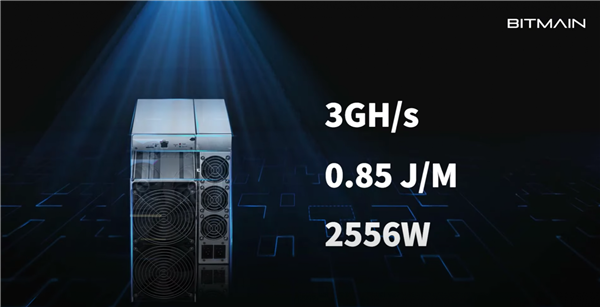

Bitmain Ant Mining Machine E9 announced: computing power equivalent to 32 pieces of RTX 3080

Bitmain has announced the official debut of the ant mining machine Ethereum E9.
In terms of core parameters, the E9 has a computing power up to 3GH/s, which is officially declared to be equivalent to 32 RTX 3080 graphics cards (94MH/s). If you take RTX 3090 at 120 mH /s, that's 25. If you take the 26MH/s NV professional mining card CMP 30HX, it is 115.
Of course, the E9 consumes 2,556 watts and has a very high efficiency of 0.85J/M.
Using a rough calculation of $0.13 per kilowatt-hour in the United States, the E9 earns $236 a day from mining.
In addition, the 3GH/s mining power is likely to be the most efficient mining machine on the market, surpassing the Rizhifeng 2600M's 2.6GH/s, and the latter's maximum is 3000 watts.
The outside world guesses that the price of Ant Mine E9 will be between $20,000 to $30,000, and it takes about 85 to 127 days to return the cost after a single investment. Even so, it's better than buying 25 RTX 3090 tickets, which will cost you $75,000 and take 311 days to pay back.